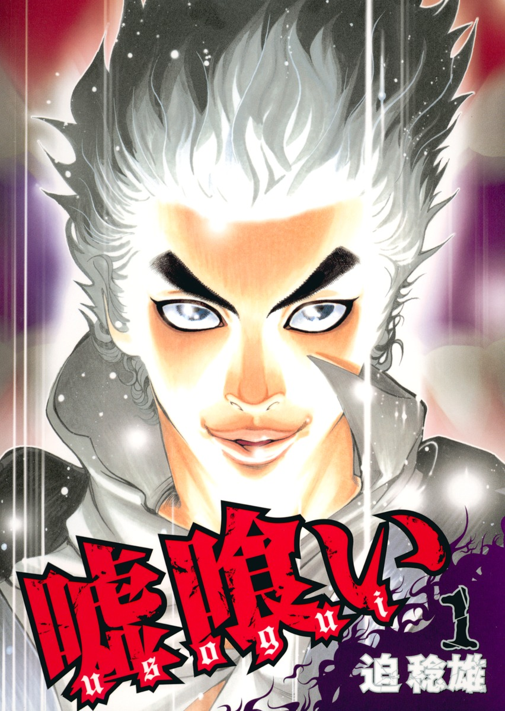
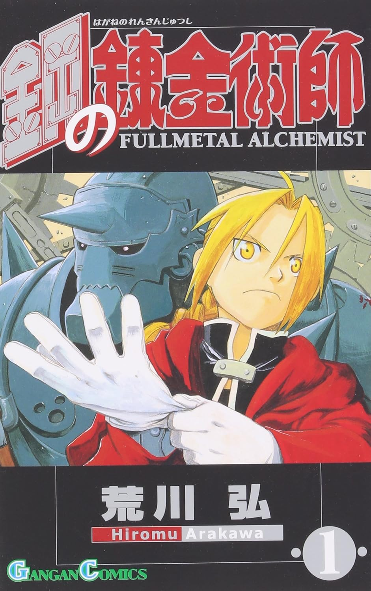

ドラゴンボール

山奥に住む怪力で、メチャクチャ元気な孫悟空。ある日悟空は、 七つ揃うとどんな願いも叶うという、ドラゴンボールを探すブルマに出会う。 彼女とともに、悟空もハラハラドキドキの旅へ出発する！
嘘喰い
とあるパチスロ店にて、青年・梶隆臣は、嘘喰いと呼ばれるギャンブラー・斑目貘に出会う。 梶はスロットの当たりに気付かず席を立った貘に、当たりが来ていることを教える。貘はスロットの当たりを教えてくれたお礼にと、 多額の借金を抱えていた梶の借金返済を手伝うと宣言。この日をキッカケに、梶と貘は金と暴力とイカサマが支配する賭博の世界に足を踏み入れていく。
鋼の錬金術師
兄・エドワード・エルリック、弟・アルフォンス。2人の若き天才錬金術師は、幼いころ、病気で失った母を甦らせるため禁断の人体錬成を試みる。 しかしその代償はあまりにも高すぎた…。錬成は失敗、エドワードはみずからの左足と、ただ一人の肉親・アルフォンスを失ってしまう。かけがえのない弟をこの世に呼び戻すため、 エドワードは自身の右腕を代価とすることで、弟の魂を錬成し、鎧に定着させることに成功。そして兄弟は、すべてを取り戻すための長い旅に出る…。